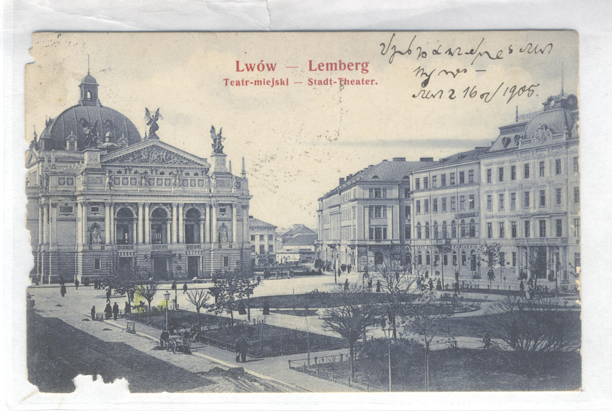

International
InternationalTajemnicza kartka pocztowa - FINAŁ
2011-02-23 | autor: flamenco108Tłumaczenie tajemniczej kartki pocztowej, o której pisałem onegdaj (a nawet nieco wcześniej), doczekało się radosnego finału. Poniżej prezentuję jej pełną treść.


treść
(1) Hochgeehrter Herr Hirschmüller!
(2) Entschuldigen Sie mir, dass ich solange an Sie nicht geschrieben habe. Erst jetzt bin ich in der Lage, an Sie diese Karte zu schreiben.
(3) Ich bin hier schon sehr mit dem Lehren beschäftigt und lese viele gute Bücher. Jeden Tag schaue ich über das Fenster zum großen Seminar
(3) und denke an Sie. Sehr angenehm wäre es mir, wenn Sie schon da wären. Deshalb bat ich Sie
(4) höflichst mir Kunde zu geben, ob Sie aufgenommen sind. Ich will Ihnen jetzt das, was ich
(5) versprochen habe, schreiben, namentlich die Verhältnisse am Seminar und am Gymnasium.
(6) Das Seminar ist in diesem Jahr sehr schön restauriert worden, da alle Säle mit Ausnahme der
(7) Schlafzimmer gemalt sind und anstelle der Ziegelöfen mit Kachelöfen versehen sind.
(8) Man muss zugeben, dass alles schön ist, aber ein jeder weiß es, dass das, was auf die Verschönerung
(9) ausgegeben wurde, sich an unserer Kost rächen wird. Am Seminar sind 70 Schüler. Von
(10) den alten sind nur <personal name> und Kinczek (? personal name) ausgeschlossen worden. In der 8. Klasse sind die alten
(11) 9 Schüler. <Lit… personal name> lässt Sie grüßen aus Dank für den von mir gebrachten Gruß. Die Stämme am Seminar konnte
(12) ich noch nicht ganz recht kennen lernen. - Am Gymnasium in Stellvertreter Ressal <? personal name>, da
(13) der neue Direktor <personal name> auf Urlaub ist - Hat Dr. Welczenski (?personal name) Ihnen schon das Buch geschickt?
(14) Was macht <personal name>? Und schreiben Sie mir, ob Sie nach Lemberg kommen?
Na odwrocie kartki:
Mit schönstem Gruß von Ihrem alten Freund aus Lemberg
Ignaz Kukiles
Lemberg, am 16. September 1905
Wszystko dzięki uprzejmości pewnego filologa z Niemiec, który, choć nie specjalista, zdołał odcyfrować zapis i opublikować na odpowiednim wątkuUnilang.
tłumaczenie
(1) Drogi Panie Hirschmüller!
(2) Proszę mi wybaczyć, że tak długo nie pisałem. Dopiero teraz mam chwilę, aby napisać do Pana tę kartkę.
(3) Jestem teraz bardzo zajęty nauczaniem i czytam dużo dobrych książek. Każdego dnia wyglądam przez okno na wielki budynek seminarium
(4) i myślę o Panu. Byłbym szczęśliwy, gdyby Pan już tu był. Stąd moje uprzejme pytanie
(5) czy został Pan przyjęty. Teraz napiszę, co obiecałem,
(6) czyli warunki w seminarium i gimnazjum.
(7) Seminarium pięknie odrestaurowano w tym roku, tak że wszystkie sale za wyjątkiem
(8) sypialni zostały pomalowane i mają piece kaflowe zamiast ceglanych.
(9) Trzeba przyznać, że wszystko wygląda pięknie, ale każdy wie, że wydatki na upiększanie
(10) zemszczą się na naszej diecie. W seminarium jest 70 uczniów. (11) Tylko <imię własne> i Kinczek <imię własne> zostali wykluczeni ze starych. W 8 klasie starych
(12) jest 9 uczniów. Lit… <imię własne> przesyła pozdrowienia oprócz podziękowań za życzenia, które przekazałem. Układów plemiennych w seminarium
(13) nie zdołałem jeszcze dobrze poznać. W gimnazjum zastępca Ressal <imię własne> od
(14) kiedy nowy dyrektor <imię własne> jest na urlopie - czy dr Welczenski <imię własne> przysłał już książkę?
(15) Co porabia <imię własne>? I czy napisze Pan do mnie, jeżeli przyjeżdża do Lwowa?
Na odwrocie kartki:
Z najlepszymi życzeniami od Pańskiego starego przyjaciela ze Lwowa Ignaz Kukiles
Lemberg, wrzesień 16, 1905
Zwróćmy uwagę, jak dużo treści zmieściło się na jednej, małej kartce pocztowej. Stenografia oznacza właście “ścisły, ciasny” - czyli mamy kolejną jej zaletę: więcej treści na mniejszej powierzchni.
Podsumowanie
Ciekawostka, co potrafi inteligentna wyszukiwarka, kiedy pewne dane zostaną przepisane do Internetu. Otóż tłumaczowi powyższej kartki udało się dotrzeć do strzępów informacji o korespondentach.
Wenzel Hirschmüller prawdopodobnie zdał maturę we Lwowie i wstąpił na Uniwersytet w Czerniowcach, który ukończył, a później został na nim wykładowcą.
W archiwum http://www.pbc.rzeszow.pl można znaleźć zeszyty rocznych zestawień uczniów lwowskich obergimnazjów (czyli zapewne szkół przeduniwersyteckich, maturalnych), gdzie dla hasła wyszukiwania “Wenzel Hirschmüller” pojawią się wpisy, że ów Wenzel w roku 1902 był uczniem klasy VI, za to w 1903 już klasy VII. Ponieważ drugiego takiego tam nie ma, można przypuszczać, że chodzi właśnie o tego chłopca. To by dobrze pasowało do dat, gdyż w takim razie rzeczywiście mógłby w 1905 być już immatrykulowanym studentem Uniwersytetu w Czerniowcach.
W materiałach http://czernowitz.ehpes.com/new/hauster/Cz1914Total.html z roku 1913 można wyszukać osobę Wenzel Hirschmüller zamieszkałą w kwartale Monasteryska pod numerem 180, którą tytułuje się profesorem.
Z treści listu zatem można by wnioskować, że Ignaz Kukiles mógł być jego zaprzyjaźnionym kolegą - nauczycielem. Jego nazwiska nie udało mi się na razie namierzyć.
Oto kolejne, pasjonujące zastosowanie stenografii, choć trudno sobie wyobrazić bardziej niszowe: małe śledztwa, odczytywanie utajnionej stenograficznie korespondencji i prywatnych, starych zapisków.
2011-02-23 autor: flamenco108